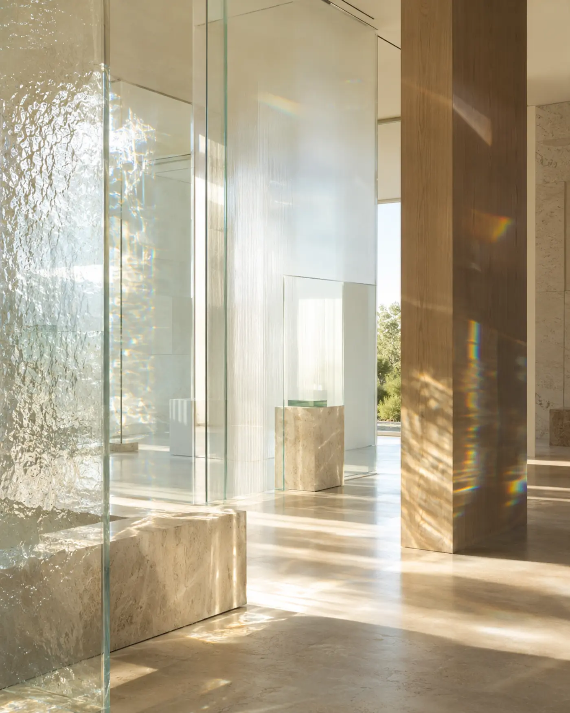

VA HOME Journal
Аромат.
Простір.
Відчуття.
Редакційні матеріали про те, як аромат формує атмосферу дому, взаємодіє з інтер’єром і стає частиною щоденного ритуалу.
Статті VA HOME Journal
Як обрати аромат для спальні
Чому спальня потребує іншої інтенсивності й характеру композиції, ніж вітальня.
Свіжі чи теплі: як відчути своє
Простий спосіб зрозуміти, яка ароматична температура пасує вашому простору.

Що таке ноти аромату
Як читати верхні, серединні й базові ноти без складної парфумерної термінології.
Як користуватися дифузором
Розташування, кількість паличок і провітрювання, які визначають справжнє звучання аромату.